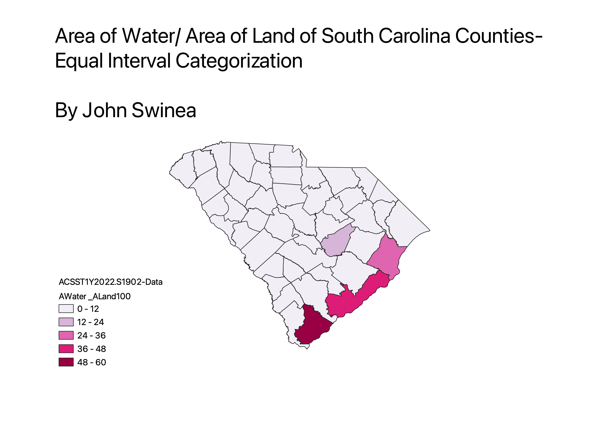
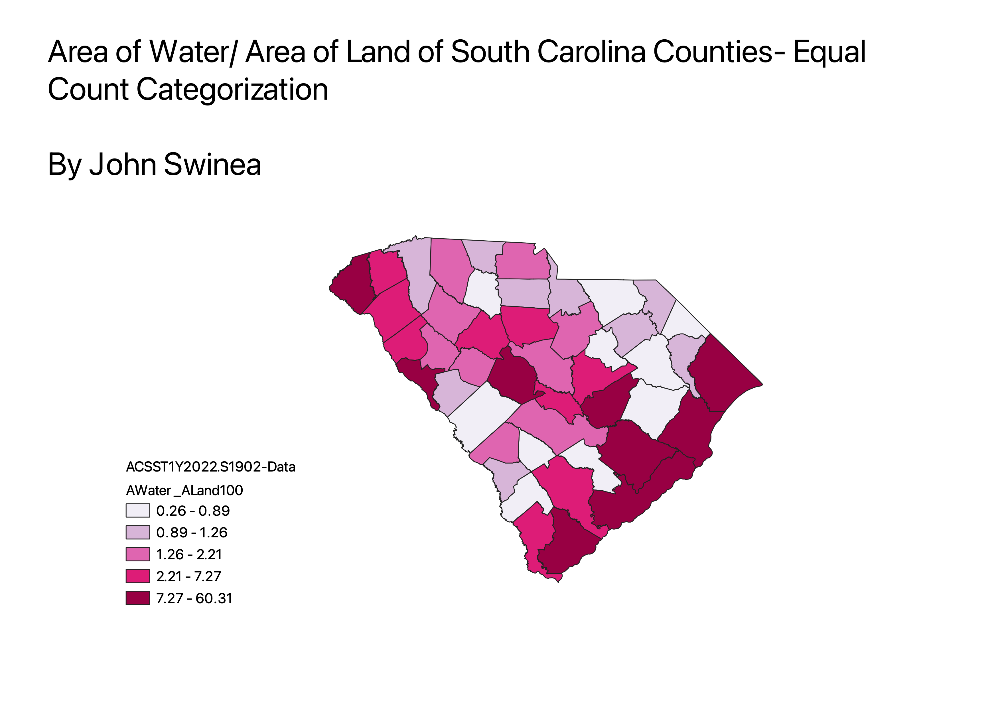
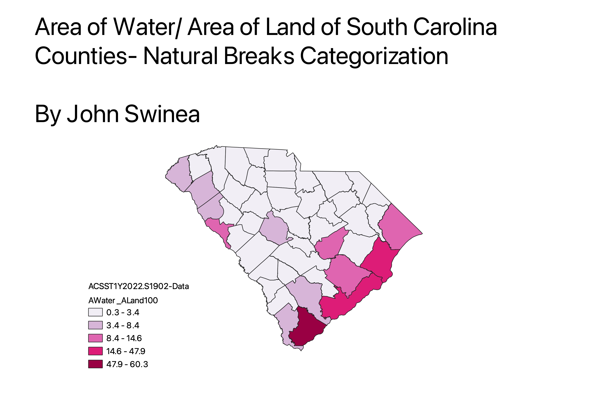

In this assignment I created a ratio of Area of Water/ Area of landof the counties of South Carolina. This ratio was able to show how the water to land ratio is much higher near the ocean, as South Carolina is on the ocean.
Equal Interval Categorization
Pros: This allowed for the easy intepretation of the data, and creates a viewing that shows that the ratios are much higher near the ocean.
Cons: In my specific case, the area of water is much higher in some counties than other due to South Carolina's proximity to the ocean, causing most of the counties to look the same without much variation.

Equal Count Categorization
Pros: This allowed for easy viewing of the data on an even scale, showing which counties had similar ratios all across the state. It allowed for the trend of which counties had higher ratios be shown statewide, without skewing to outliers.
Cons: This did not account for outliers, considering South Carolinas proximity the ocean, so it would have needed to be more specific to show accurate area ratios to other counties.

Natural Breaks Categorization
Pros: Like the Equal Imnterval Categorization, this allowed for the data to be viewed on a more relative scale to show the proximity to the ocean. However, it was slightly more representative of the other counties than the Equal Interval Categorization.
Cons: This also made the scale not representative of the entire state, in this case catering towards the fact that South Carolina is on the ocean.
